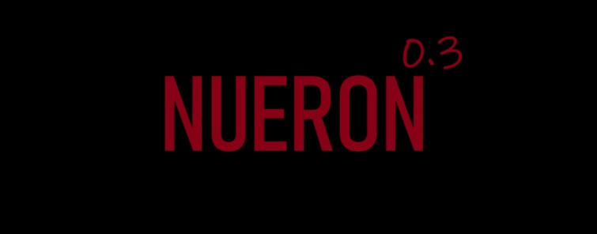

Nueron 0.3
WhatsApp moderation bot — mod & automation service
Nueron 0.3 — resilient WhatsApp moderation, built for speed
Launching in 2–4 years. Nueron 0.3 will be a highly configurable moderation bot for WhatsApp groups with advanced filters, multi‑group management, role management, and observability.We aim to give regular people an easy and cheap way to moderate their groups automatically.To use the bot you will have to add the Nueroon0.3 phone number to your group and pay 0.20 SGD every month by linking
your payment method to this website and you can cancle your subscription by clicking CANCLE SUB on the full website. We will send emails every month saying that the bot is active in case you forget about your subscription.
Key features
Architecture diagrams
Quick start snippets (place your code here)
const { Client, LocalAuth } = require("whatsapp-web.js");
const qrcode = require("qrcode-terminal");
const fs = require("fs");
const fsp = fs.promises;
# BANNED_WORDS=example1'example2
# ALLOWED_NUMBERS=6580123456,6580765432
# TARGET_GROUP_NAME="My Group"
📁 /index.js
📁 /wwebjsauth
📁 /package.json
Screenshots


Documentation
APIs used, code, uses, struggles

install git lfs if needed
git remote add origin "REPO"
This project was inspired by Discord modbots and since people were
swearing a lot in the class gc I took it into my hands to make a fast and responsive bot
to moderate the group and ensure no vulgarities were to be used for bullying.
APIs and web hosting
We used whatsapp-web.js as the API so that we could do actions useing the bot such as banning and deleting messages.
I reccomend using railway as a web hosting service as its cheap and what were currently using for development testing.
Advanced: Config template
{
"BANNED_WORDS": "foo,bar",
"ALLOWED_NUMBERS": "+6580123456",
"TARGET_GROUP_NAME": "My Group"
}
Roadmap
Planned release window: 2–4 years. High level milestones:
Nueron0.3 project started 11-4-2025 by Cookie Developments
Nueron0.3 project started 11-4-2025 by Cookie Developments